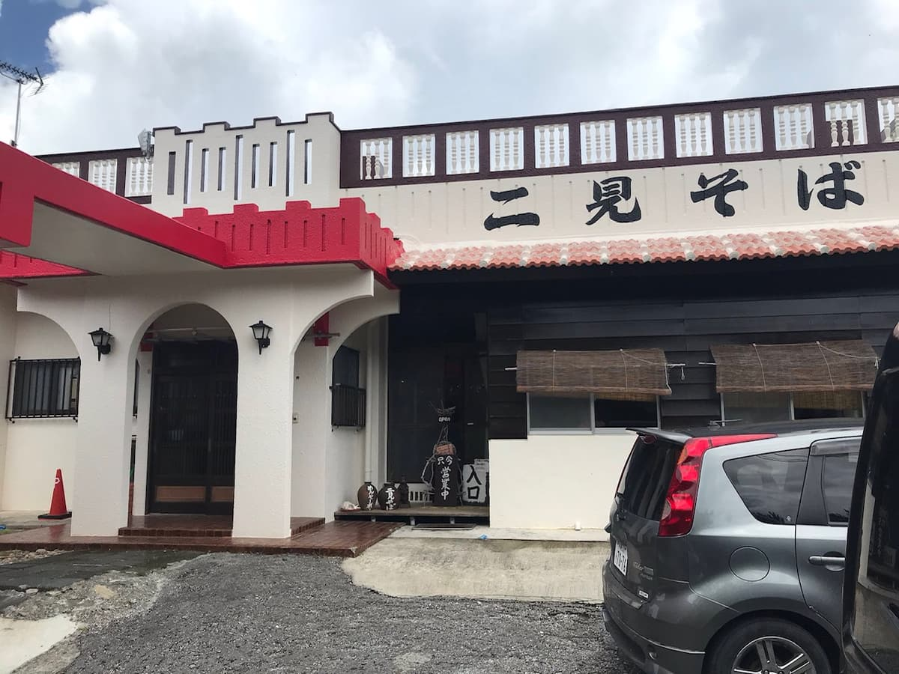
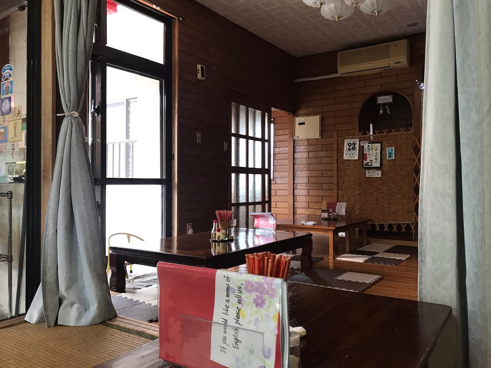
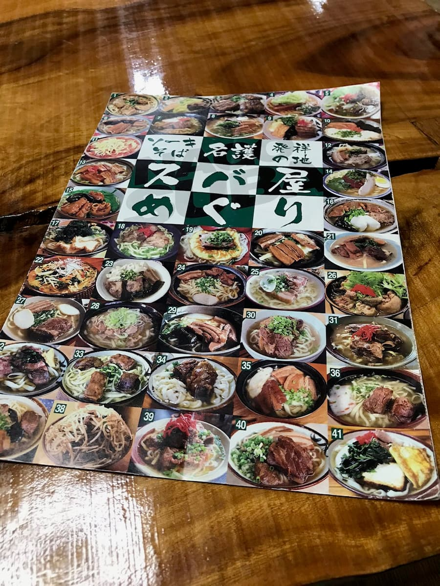
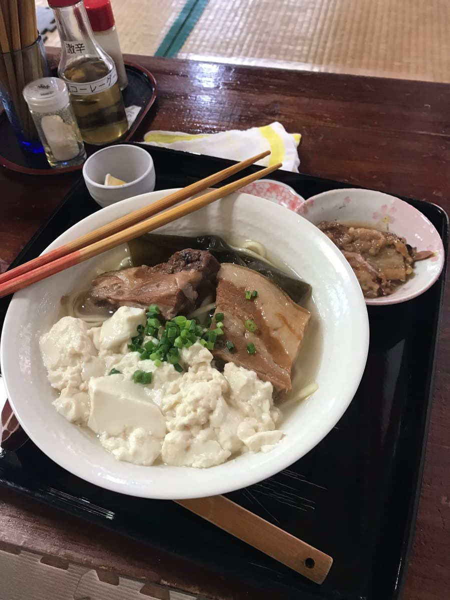

「名護市そばマップ」で紹介されていて、2020.9に食べてみました😀
※こちらのお店、2024.8現在、休業中（2024.5頃〜？）の情報がありますのでご注意下さい。


そばマップで紹介されていた「二見そば全部のせ」を注文。


ソーキ、三枚肉、昆布、ゆし豆腐と具沢山で最高です😁 手間をかけて作っている鳥、豚、かつお出汁で取ったスープに中細麺が合い美味しいです。
コーレーグースも自家製で、全てにおいて、とても手間暇かけて丁寧に作っているのが分かります。
評価（12点/15点）：自家製にこだわっている二見そば。こちらもオススメですのでぜひ食べてみて下さい。
PS：写真は無いですが、女優の黒木メイサさんがこの辺りの出身らしく、黒木メイサさんもこちらのそば屋お気に入りのようで、店内にサインがあったと思います。
麺 ：★★★★☆（4）
スープ：★★★★☆（4）
具 ：★★★★☆（4）